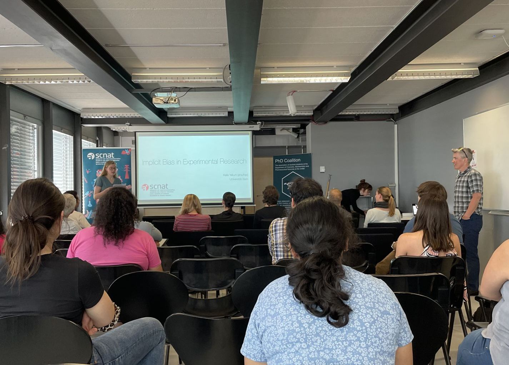

About this event
The PhD Coalition and the Bernese Chemical Society organised the University of Bern workshop in the SCNAT Platform Chemistry Ethics Series on 7 June 2023. The programme addressed recognizing and overcoming bias.
Prof. Lee Penn of the University of Minnesota spoke about images as representations of reality and how to overcome implicit bias in everyday situations. Kaila Yallum presented implicit bias in experimental research. The programme included interactive discussions and an apéro.

More about this workshop on SCNAT
Have a question or a memory to share? Contact the Coalition.